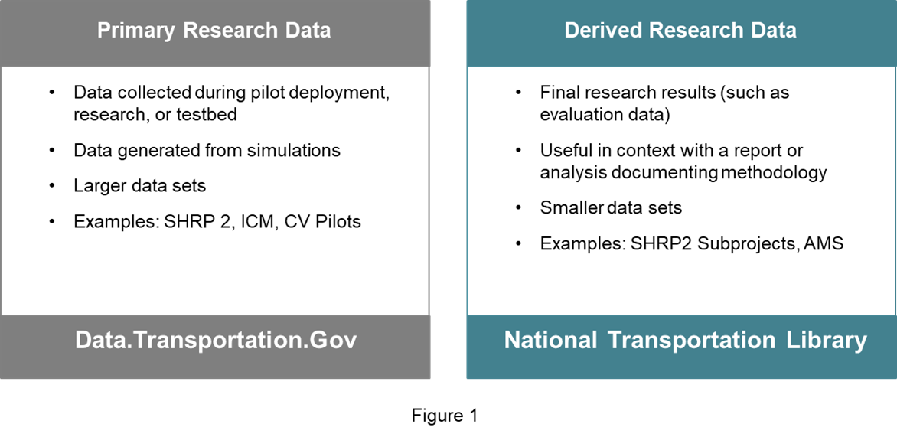

Draft ITS Public Data Hub Public Access Policy
Federal and USDOT data access policies
All work conducted for the Intelligent Transportation Systems Joint Program Office (ITS JPO) shall comply with broader federal and USDOT data policies. These include:
- Federal Open Data Policy - M-13-13 memorandum for the Heads of Executive Departments and Agencies
- USDOT Public Access Plan - S. Department of Transportation Public Access Plan: Increasing Access to Federally Funded Research Results
ITS JPO data access policies
Applicability
The question of whether these ITS JPO data access policies apply, i.e., whether data generated by a specific project or system must be made accessible, and how, is determined by the ITS JPO and the relevant project team. This determination is typically made during procurement or development of whatever contract or other agreement pertains to the project or system that generates the data.
The policies and procedures presented here apply to data that is “ITS JPO mission-related.” This includes data generated from most ITS JPO-funded projects. To manage costs and keep focused on advancing the ITS JPO multimodal mission, bounds have been set on the research data that the ITS JPO governs, stores, and promotes. Those bounds are based on the ITS JPO’s multimodal mission to accelerate the research, development, and deployment of life saving and mobility enhancing technologies.
ITS JPO recognizes that not all data generated via ITS JPO-funded projects come from ITS technologies and not all data generated from ITS technologies funded outside the ITS JPO help advance the ITS JPO statutory mission. Regardless of USDOT funding source, if a project contributes to the ITS JPO’s current strategic goals (see the ITS JPO Strategic Plan), the ITS JPO has an obligation or an interest in governing the data it generates and enabling its retention and use.
Determining which data is within the ITS JPO’s mission to govern
A review process that precedes initiation of any JPO-funded project—a process that includes approval by the ITS JPO Strategic Planning Group (SPG)—ensures that all ITS JPO-funded projects help advance the ITS JPO’s mission. Any data generated via ITS JPO-funded projects are within the ITS JPO’s mission to govern. Because these projects are funded by the ITS JPO, ITS JPO enforces certain data governance policies and practices via standard contract, agreement, and grant language; regular oversight; and technical assistance in collaboration with the project managers.
Data that help advance the ITS JPO’s multimodal mission are generated by many ITS-related projects funded outside the ITS JPO. Broadly, it is within the ITS JPO mission to consider how data is generated and retained within such projects. The information presented here focuses on ITS JPO-funded projects. Updates to this information will address any policies and procedures that may address non-ITS JPO funded projects. This may include support to non-ITS JPO program managers in using their organization’s and ITS JPO’s data governance policies and practices to plan and execute their project. This could include determination, on a case-by-case basis possible deferral or sharing of data storage costs.
Data management plan
As stipulated in contracts and other agreements for projects generating data for submission to the ITS JPO, these projects must develop a Data Management Plan. These stipulations include submission of the DMP soon after project initiation and maintenance of the DMP as a living document over the life of the project. It is the DMP that will document the specific approach to complying with the ITS JPO data governance policies and procedures described here and reflected in the project’s contract or other agreement. The DMP describes how data will be managed during and after the project. The project contract or other agreement will, unless otherwise instructed by the ITS JPO, require the project team to follow the DMP guidelines available at: https://ntl.bts.gov/publicaccess/creatingaDMP_extramural.html.
Determining the appropriate research data system
As part of the decision on whether and which data policies and requirements apply to a specific project or system (typically made before or part of the execution of the contract or other agreement governing the project), the ITS JPO, in consultation with the project team, will have determined which type of research data system should be used for the project-generated data. The information below supports those determinations and describes the type of data and other circumstances appropriate to several alternative research data systems.
Option 1: ITS JPO-approved public data systems
There are two ITS JPO approved approaches for making data publicly accessible. The determination of which of these two systems should be used for a particular project or system is typically made as part of the contracting or other agreement process before or early in the project.
These two systems are used to store mature data - i.e., the data structure is settled, quality is high - and within the size limits of these systems (policies and procedures for data that are not suitable for these systems are discussed below). For data stored within these systems, users can leverage functionality to preview, visualize, and download data.
Figure 1 summarizes the applicability of the two ITS JPO-approved public data systems to different types of data. Additional information on these two systems and guidance on what types of data are appropriate for each, is provided below the figure.

data.transpotation.gov: This ITS JPO-approved public data system should be used for “primary” or “foundational” research data. Examples include data collected via the Strategic Highway Research Program 2 (SHRP 2) naturalistic driving studies, the Connected Vehicle (CV) Pilot projects, and the Integrated Corridor Management (ICM) sites. These data are collected over the course of a given research project or pilot deployment project to support one or more research goals. There is often interest from those outside the core project team to access and use these data to pursue other research goals not only at the end of the project but throughout the period of data collection. Given the ITS JPO’s mission focus on emerging technologies, timely access to these data is essential to inform near-real-time policy and technical decision-making.
National Transportation Library (NTL): This public data system should be used for “sample” or “derived” data that supports final research results. Examples include data from SHRP 2 subprojects that use subsets of the primary SHRP 2 data to investigate specific research questions and Connected Vehicle Pilot evaluation data that support analysis of specific safety and mobility benefits. These data are most useful in context of the research publication or analysis that produced them. While it can be beneficial to share the in-process data midway through a project (e.g., with direct peers), it is often acceptable to wait to provide the final data along with the published results at the end of the project. This type of data is the primary focus of public access rules described at https://ntl.bts.gov/publicaccess/ and it is unlikely to become massive for a given project given the limitations of individual researchers. The interest in these data, to the extent that they support the published research results, is likely to persist in perpetuity as other researchers seek to replicate the results and build upon them.
Given the differences between these two types of data (“foundational” vs. “derived”), the ITS JPO treats them differently in terms of how and where the data are stored, cataloged, and curated. The ITS JPO helps data providers understand which category their data fits into and why. From a user perspective, however, ITS JPO promotes all ITS JPO mission-related data holistically.
Data that doesn’t qualify for storage within these two systems is still be listed in the appropriate catalog, but the catalog entry points to data hosted outside the systems (policies and procedures for data that are not suitable for these systems are discussed below). ITS JPO disseminates and enforces consistent standards to enable a positive user experience, efficient data access, and interoperability across this federated system of data storage, that is, “options 1-4” discussed below. This includes consistent use of virtual, i.e., cloud-based, storage infrastructure that makes federated data sets indistinguishable from centralized data sets from an end user perspective.
Option 2: ITS JPO-approved controlled-access data systems
Projects or systems generating data with privacy, security or confidentiality issues is not suitable for sharing, in full, on the ITS JPO-approved public research data systems described above.
Examples of specific risks to privacy, confidentiality and security that would suggest that an alternative approach is required include:
- Personally identifiable information (PII)
- Financial information
- Passwords or other information that could be used to gain unapproved access to other controlled-access systems
- Proprietary information
- Anything that would cause harm or psychological distress to the public
Information on PII from the National Transportation Library available here is useful in understanding the types of data that should reside in a controlled-access system: https://ntl.bts.gov/publicaccess/creatingaDMP_extramural.html).
Projects or systems generating data that is not suitable for submittal to ITS JPO public research data systems must:
- provide the sensitive data to authorized users, including but not limited to independent evaluators, via a controlled-access research data system approved by the ITS JPO; and
- provide a sanitized or aggregated subset of the data to one of the ITS JPO-approved public systems (see sections 2.3.1, 2.3.2 and 2.3.4).
ITS JPO and its partners currently operate or are developing several controlled-access research data systems capable of providing varying access rights for approved users to secured, cloud-based data systems and analysis tools. These include systems providing access to:
- federal data sets across USDOT modal administrations;
- federal and local data of interest to specific user communities; and
- data supporting evaluations of federally-sponsored local deployments.
ITS JPO, the project team associated with the data-generating project or system, and any other partners associated with the candidate data repositories, coordinate to determine which specific controlled-access system(s) is appropriate and to make other determinations regarding data and approved uses and users.
Option 3: Data generator-proposed alternative public or controlled-access systems
Project teams required to submit data may, as an alternative to options 1 or 2 above (ITS JPO and partners’ research data systems), instead propose to provide access to data via a public or controlled-access research data access system not previously approved by the ITS JPO, if they can demonstrate that the system meets U.S. DOT and ITS JPO requirements. Those requirements will be outlined in the future and will enable a positive user experience, efficient data access, and interoperability across this federated system of data storage. This includes consistent use of virtual (i.e., cloud-based) storage infrastructure that makes federated data sets indistinguishable from centralized data sets from an end user perspective. Any immediate questions can be directed to: data.itsjpo@dot.gov.
Option 4: ITS JPO Research Data Sandbox
The ITS JPO directly manages a subset of the data that do not qualify for storage on data.transportation.gov or NTL. These data are managed within the ITS Research Data Sandbox. The Sandbox is a collection of cloud resources to ingest, transform, and store ITS research data that is not yet mature, e.g., the data structure has not yet been harmonized, or the quality is low and requires development of new extract, transform and load (ETL) processes. Unlike some of the other systems that provide access to more mature data types, the Sandbox requires users to work directly with cloud resources with little front-end functionality.
The Sandbox allows the ITS JPO and its collaborators to iteratively experiment with data structures and processes and rapidly move new data sources from low to high maturity. While metadata standards and data catalogs are well-established, standards for data schema (how data is structured), data elements (specific content), file formats, and methods of access (e.g., push vs. pull, file downloads vs. API access) are not well established within many areas of transportation research. Examples include connected vehicle data, data on work zones, and some types of road weather data. In these cases, in the absence of established standards, decisions for a given data set are based on user input, de facto standards, and best practices from other sectors. The ITS JPO directly engages users, identifies de facto standards, and adopts best practices for the data that ITS JPO curates centrally (including a preference for non-proprietary formats) and helps third party data providers do the same. Helping others to harmonize their data has the added benefit of driving interoperability and re-use.
Once data within the Sandbox has achieved a high state of maturity, it is moved to the appropriate system for providing access to mature data types, such as data.transportation.gov (in some cases ingest processes may continue to be run in the Sandbox).
Procedures for providing data access (data submission)
Some procedures apply regardless of system used to provide data access, i.e., options 1-4, above. Sections 2.4.1 and 2.4.2 address common policies and procedures. The determination of policies and procedures specific to individual data systems is made by the ITS JPO in coordination with the team responsible for the data-generating project or system.
Data submission questionnaire
All data submittals must be initiated by completing the questionnaire in Appendix A. This questionnaire addresses issues such as point of contact, timelines, privacy issues, and key search terms.
Timing of data submissions
Regardless of which system is used to provide access to data, ITS JPO policy is to make data accessible—to allow users to begin extracting value and generating benefits from the data—as quickly after the data is generated as possible, including up to near real-time through the period of data collection (this is less applicable to the NTL in cases where derived data, e.g., data produced from the evaluation of completed projects, is shared). Time from data generation to end user is minimized using automated data transfer and sanitization processes, including streaming and batch uploads as appropriate (see below for additional information on data submissions.
Data submissions to data.transportation.gov
Procedures for providing data access through data.transportation.gov are documented in Appendix B. These procedures provide links to examples of how data looks on the system, and describe metadata requirements, procedures for data formatting, and procedures for sending data.
Data submissions to the National Transportation Library
Current ITS JPO-specific procedures for submitting data to NTL are documented in Appendix C. These procedures provide links to examples of how data looks on the system, and describe metadata requirements, procedures for data formatting, and procedures for sending data. Additional procedures covering both ITS JPO-specific submittals and any submittals to NTL must be following and are here: https://ntl.bts.gov/publicaccess/howtocomply.html.
Data submissions to ITS JPO-approved controlled-access data systems
Procedures for submitting data to ITS JPO-approved controlled-access data systems will be outlined in the future. Any immediate questions can be directed to: data.itsjpo@dot.gov.
Data submissions to data generator-proposed systems
Procedures for submitting data to systems that are proposed by the data generator and which are found to meet ITS JPO requirements vary depending upon the specific system. Some of the procedures applicable to the other data systems, e.g., data.transportation.gov and NTL apply, although other procedures are different. These determinations are made by the ITS JPO the team associated with the data-generating project or system.
Data submissions to the ITS JPO Research Data Sandbox
Procedures for submitting data to the ITS JPO Research Data Sandbox will be outlined in the future. Any immediate questions can be directed to: data.itsjpo@dot.gov.
Frequently asked questions
Q - I am required to submit data to the Research Data Exchange. Do these policies apply to me?
A - Yes. These policies apply to all data currently being generated by ITS JPO-funded projects. Any projects required to provide data to the RDE that have not yet done so are now required to provide data according to the policies on this page. The level of effort for providing data to the systems described here are equal to or less than the level of effort to provide data to the RDE. Please contact your contracting officer and data.its.jpo.gov for more information.
Q - Are ITS JPO personnel available to talk to my project team to explain these policies?
A - Yes, submit your request to meet, along with any additional questions you have, to data.itsjpo@dot.gov. You will be connected with someone who can explain the systems and procedures.
Q - I’m looking for information on the Research Data Exchange. Where can I find it?
A - All data formerly on the Research Data Exchange can be found via its.dot.gov/data.
Resources
Questions? Contact Us
data@itsjpo.gov